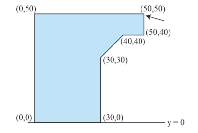

有一个密度均匀的起重机，它的形状可以看成沿着 $y$ 轴的 $n$ 棱柱。底面 (即平行于 $Oxz$ 平面的截面) 的形状是一个简单 $n$ 边形，截面的面密度为 $1 \,\mathrm{kg/m^2}$。如下图所示：
现在需要在 $\left( x_1, 0, z_1 \right)$ 处悬挂一个质量为 $m \,\mathrm{kg}$ ($m \geq 0$) 的重物，求 $m$ 的取值范围，使得起重机不会向左或向右倾斜 (这里假设受力在 $y$ 轴上是均匀分布的，因此起重机不会向前或向后倾斜)。
第一行包含一个正整数 $n$ ($3 \leq n \leq 100$)，表示多边形的顶点数。
接下来 $n$ 行，每行两个整数 $x_i, z_i$ ($-2000 \leq x_i \leq 2000; 0 \leq z_i \leq 2000$)，表示截面 ($Oxz$ 平面) 上的一个顶点，所有顶点以逆时针或顺时针顺序给出。特别地，$\left( x_1, 0, z_1 \right)$ 是悬挂重物的顶点。保证至少有两个顶点在 $x$ 轴上。
显然 $m$ 的取值范围 $I$ 是一个下方有界的闭区间或空集。若 $I = \varnothing$，输出 unstable；若 $I = \left[ a, + \infty \right)$，输出 <⌊a⌋> .. inf；若 $I = \left[ a, b \right]$，输出 <⌊a⌋> .. <⌈b⌉>。
设 $z_i = 0$ 点中，$x_i$ 最小的和最大的分别为 $L, R$，则通过简单的力矩分析可知，起重机不 (向左右) 倾斜的充分必要条件是整个起重机的质心的横坐标在 $\left[ L, R \right]$ 中。
由于起重机的实心的，且面密度均匀，因此设各个点的坐标分别为 $P_1, P_2, \cdots, P_n$ ($P_i = \left( x_i, z_i \right)$)，则可以使用如下公式计算质心 (原理和面积相同，利用割补法)：$$ \overrightarrow {OC} = \frac {\displaystyle \sum_{i=1}^n \left( \overrightarrow {OP_i} \times \overrightarrow {OP_{i+1}} \right) \left( \overrightarrow {OP_i} + \overrightarrow {OP_{i+1}} \right)} {\displaystyle 3 \sum_{i=1}^n \overrightarrow {OP_i} \times \overrightarrow {OP_{i+1}}} $$ (下标模 $n$ 理解)
记 $\displaystyle A = \sum_{i=1}^n \overrightarrow {OP_i} \times \overrightarrow {OP_{i+1}}, B = \sum_{i=1}^n \left( \overrightarrow {OP_i} \times \overrightarrow {OP_{i+1}} \right) \left( x_i + x_{i+1} \right)$，则有 $\color {fuchsia} {x_C = \dfrac B {3 A}}$。
考虑在 $x_1$ 处悬挂质量为 $m \,\mathrm{kg}$ 的重物，则质心的横坐标会变成 $$ \frac {A / 2 \cdot x_C + m \cdot x_1} {A / 2 + m} = \frac {B + 6 m \cdot x_1} {3 \left( A + 2 m \right)} \overset {\operatorname{def}} = F \left( m \right) $$
特别地，若 $x_1 = x_C$，则无论 $m$ 如何取值，质心的横坐标永远等于 $x_C$，因此只需讨论是否有 $x_C \in \left[ L, R \right]$ 决定答案为 $\left[ 0, + \infty \right)$ 还是 $\varnothing$。
显然 $F \left( m \right)$ 在 $\left( - \dfrac A2, + \infty \right)$ 上关于 $m$ 单调，因此我们可以先解关于 $m$ 的方程 $F \left( m \right) = L$ 和 $F \left( m \right) = R$，设解为 $m_L$ 和 $m_R$。
(具体地，$F \left( m \right) = x_2$ 的解为 $m = \dfrac {B - 3 A \cdot x_2} {6 \left( x_2 - x_1 \right)}$)
由于 $x_1 \neq x_C$，因此 $m_L \neq m_R$，下面先不考虑解为无穷的情况。
如果 $m_L, m_R > - \dfrac A2$，则不难发现最终的答案就是 $\left[ \min \left\{ m_L, m_R \right\}, \max \left\{ m_L, m_R \right\} \right] \cap \left[ 0, + \infty \right)$。
如果 $m_L, m_R < - \dfrac A2$，则答案是空集。
如果二者中有其一 $< - \dfrac A2$，不妨设是 $m_L$，则可以明答案等于 $\left[ \max \left\{ 0, m_R \right\}, + \infty \right)$。
对于 $m_L, m_R$ 中有无穷的情形，可以将它们统一看成 $- \infty$ 或 $+ \infty$，不影响结论成立。
于是我们可以获得 $I$ 的两端点的有理数形式，最终简单做个除法即可得到答案，时间复杂度 $O \left( n \right)$。
#include <bits/stdc++.h>
#define fail "unstable\n"
using std::cin;
using std::cout;
typedef long long ll;
typedef std::pair <ll, int> pr;
const int N = 108;
struct vec2 {
int x, y;
vec2 (int x0 = 0, int y0 = 0) : x(x0), y(y0) {}
friend std::istream & operator >> (std::istream &in, vec2 &B) {return in >> B.x >> B.y;}
inline int operator ^ (const vec2 &B) const {return x * B.y - y * B.x;}
} p[N];
int n;
inline void up(int &x, const int y) {x < y ? x = y : 0;}
inline void down(int &x, const int y) {x > y ? x = y : 0;}
inline pr get(int A, ll C, int x1, int x2) {
if (x1 == x2) return pr(-1, -1);
ll num = C - 3ll * A * x2; int deno = 6 * (x2 - x1), gcd;
if (deno < 0) num = -num, deno = -deno;
gcd = llabs(std::__gcd<ll>(num, deno)), num /= gcd, deno /= gcd;
if (2 * num + (ll)A * deno < 0) return pr(-1, -1);
return num < 0 ? pr(0, 1) : pr(num, deno);
}
inline bool lt(const pr &A, const pr &B) {
if (!~A.first) return false;
if (!~B.first) return true;
return A.first * B.second < A.second * B.first;
}
int main() {
int i, L = INT_MAX, R = INT_MIN, X, A = 0; ll C = 0; pr w1, w2;
std::ios::sync_with_stdio(false), cin.tie(NULL);
cin >> n;
for (i = 0; i < n; ++i) cin >> p[i];
X = p->x, p[n] = *p;
for (i = 0; i < n; ++i) {
A += p[i] ^ p[i + 1],
C += ll(p[i] ^ p[i + 1]) * (p[i].x + p[i + 1].x);
if (!p[i].y) down(L, p[i].x), up(R, p[i].x);
}
assert(L != INT_MAX && A);
if (A < 0) A = -A, C = -C; // x_C = C/A
if ((ll)X * A == C) return cout << ((ll)L * A <= C && C <= (ll)R * A ? "0 .. inf\n" : fail), 0;
w1 = get(A, C, X, L), w2 = get(A, C, X, R);
if (lt(w2, w1)) std::swap(w1, w2);
if (!~w1.first || !w2.first) return cout << fail, 0;
if (!~w2.first) return cout << w1.first / w1.second << " .. inf\n", 0;
return cout << w1.first / w1.second << " .. " << (w2.first + w2.second - 1) / w2.second << '\n', 0;
}
坑1：有可能出现 $- \dfrac A2 < m_L, m_R < 0$ 的情形，此时区间 $\left[ \min \left\{ m_L, m_R \right\}, \max \left\{ m_L, m_R \right\} \right]$ 非空，但是交 $\left[ \min \left\{ m_L, m_R \right\}, \max \left\{ m_L, m_R \right\} \right] \cap \left[ 0, + \infty \right)$ 为空集，需要输出 unstable。
坑2：顶点可能以顺时针顺序给出，因此需要通过 $A$ (有向面积) 的正负决定是否 std::reverse (当然其实只需要令 $A \gets -A, B \gets -B$ 即可)。